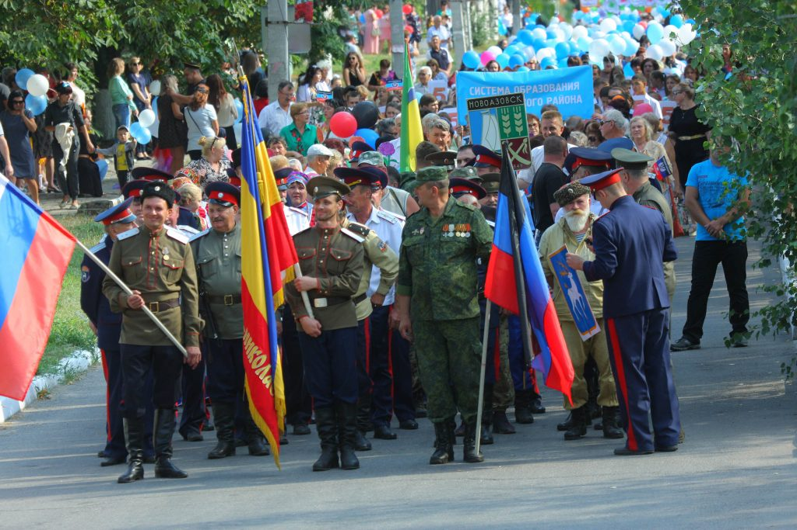
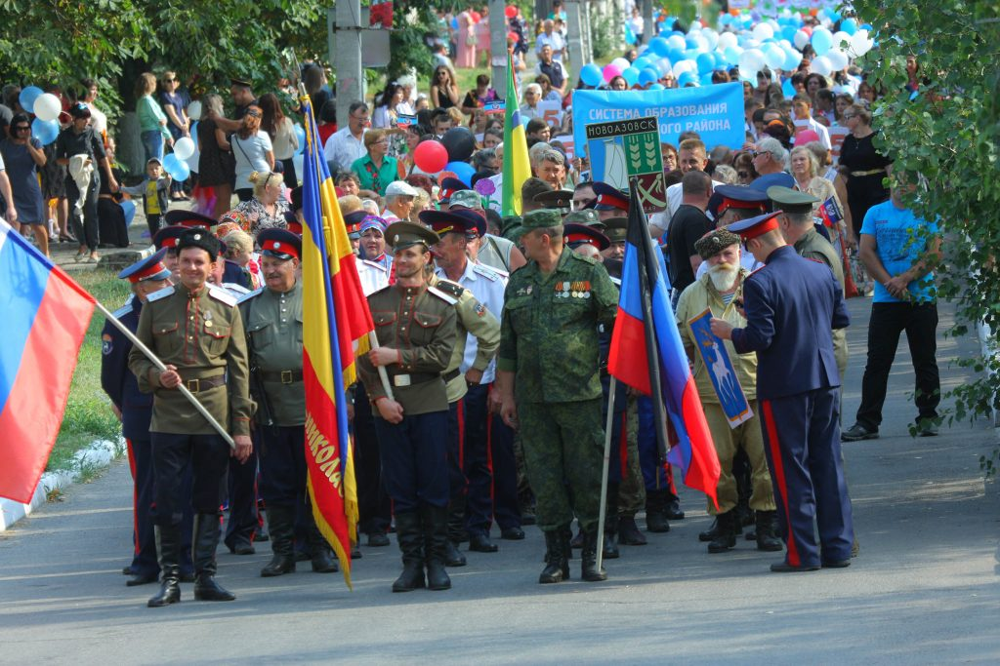
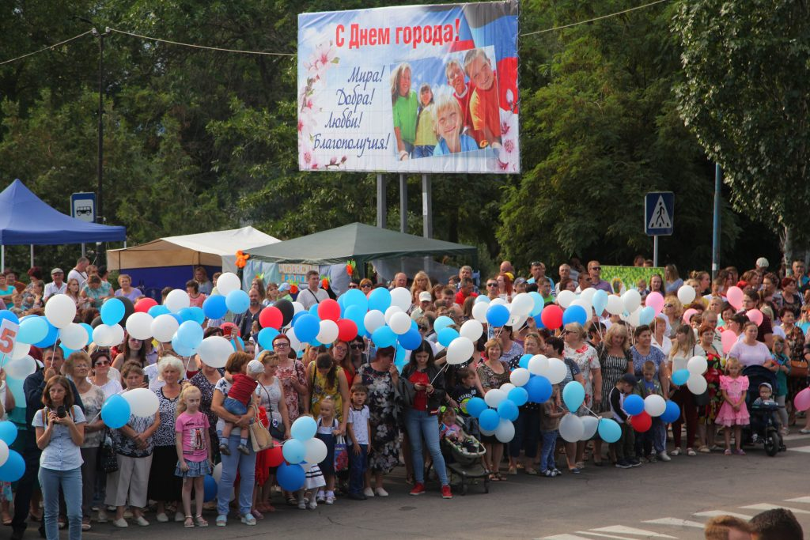
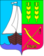

Новоазовск
Новоазовск — город на Украине, райцентр Новоазовского района. Де факто — с 2014 года населённый пункт контролируется самопровозглашённой Донецкой Народной Республикой
Последнее событие города
13 июля, в Новоазовске состоялись торжественные мероприятия, посвященные 170-летию со дня основания города. Как сообщает корреспондент официального сайта Донецкой Народной Республики, праздник открылся шествием трудовых коллективов Новоазовского района, представителей донского казачества, работников системы образования, здравоохранения и многих других. Кроме того, гости и жители города смогли посетить ярмарку народных промыслов и посмотреть праздничный концерт эстрадных и самодеятельных коллективов. Новоазовск был основан 4 июля 1849 года как казачья станица Новониколаевская, названная так в честь российского императора Николая I. В конце XIX века станица становится центром Таганрогского округа Области Войска Донского, а в ХХ веке она вошла в состав Мариупольского округа Донецкой губернии. В настоящее время Новоазовск является одним из основных агропромышленных центров Республики.
 
  